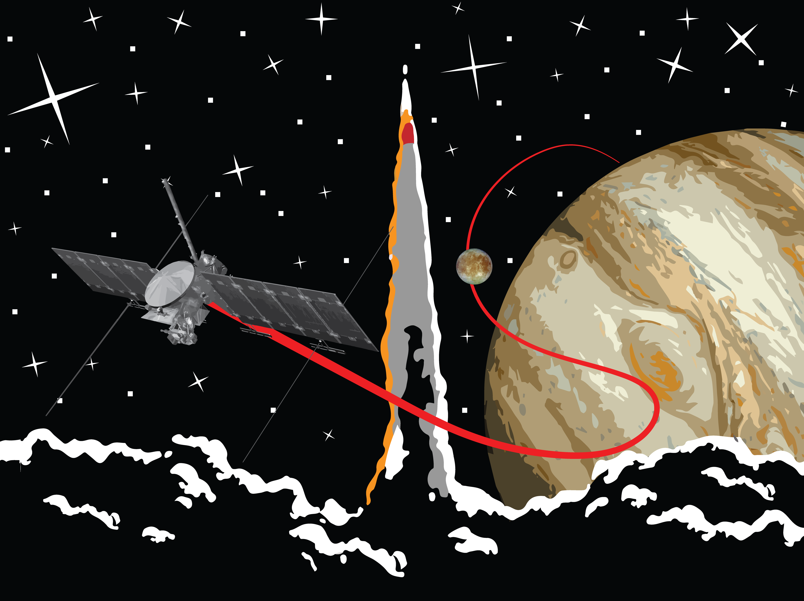
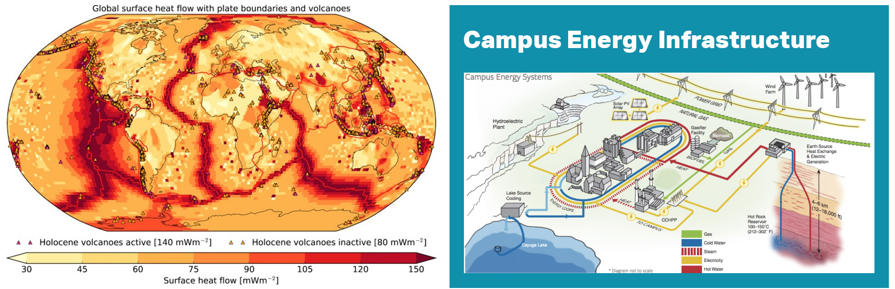

If you're thirsty and have always wanted to know about looking for space microbes on Europa, what medieval people really thought about dragons, how to make energy from alternative sources, or what a philosopher has to say about what the heck is actually going on, come to Public Works! It's a free event in the style of Nerd Night but designed just for Ithaca. We're bringing a variety of intellectually-stimulating presentations right to you for your entertainment and educational pleasure at The Downstairs, the bar below The Watershed. Come hear talks given by Cornell and IC graduate students, professors, community experts, and everything in between! Each session will feature one to three accessible talks, followed by a Q&A session where audience participation is highly encouraged but not required!
Bring a friend, make a friend, ask an expert, and drink a beer!
The July 5th Public Works event will feature 2 talks:
A space mission talk:
"On the Choice of a Rocket: How congressional politics can make you spend hundreds of millions of dollars planning for the wrong mission but then still get mad at you for going over budget"
by Dr. Zach Ulibarri
Postdoctoral Associate in the Cornell ASTRA Lab
In 2024 the Europa Clipper will launch on a SpaceX Falcon Heavy rocket to begin its five and half year trip to Jupiter, where it will study the icy ocean world of Europa (which is one of the best bets for alien life in our own solar system!). But for quite some time, NASA mission planners had to allow for the possibility of launching on both the Falcon Heavy and the United Launch Alliance Space Launch System (SLS). Why? Because the SLS had friends in congress, of course. In this talk, we'll learn about how congressional politics can make life hell for mission planning, why NASA missions are so expensive, what single points of failure are, and why the indecision of launch vehicles can burn unbelievable sums of money. We'll also look at the Galileo spacecraft as a cautionary tale about changing mission parameters late in the game.

and a geothermal energy talk:
"Fires from the Deep: Earth’s Internal Heat as a Solution to the Global Energy Problem"
by Dr. Adam J. Hawkins
Lynch Family Postdoctoral Associate in Curricular Engagement at the Johnson Museum
With a global population approaching 10 billion people, how can we bring Earth’s population to the living standards of the United States and/or the European Union while simultaneously reducing greenhouse gas emissions? In this talk, Dr. Hawkins will introduce the audience to the nuanced challenge of simultaneously tackling climate change while expanding access to energy infrastructure in under-developed regions of the world. Topics will include limitations of intermittent electricity suppliers, options for baseload power generators, and the potential of geothermal energy to transform global energy infrastructure, including the Earth Source Heat project at Cornell University.

Time and Location
First Wednesday of every month, 7 PM.
The Downstairs
121 W. State Street
Ithaca, NY
Want to sign up for email updates?
Send an email to publicworks-L-request@cornell.edu with the subject line 'join' (without quotes!)
Want to get instagram updates?
Follow our account!
We want to hear from you! Come talk to us at a Public Works event or send us a message at ithacapublicworks@gmail.com. Are you an academic? Feel free to list your Public Works talk as an outreach event on your CV! Are you not an academic? We still want to hear from you!